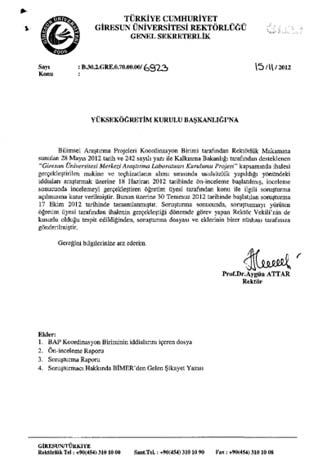

YÖK Teslim Alınıyor
2012’nin 2013’e döndüğü gece. ODTÜ olayları henüz sıcaklığını koruyor. Yeni yıldaki ilk eylemini gerçekleştiren RedHack, yılbaşı gecesi YÖK’ün resmi sitesine bağlı internet eğitim sayfası olan ide.yok.gov.tr’ye saldırı düzenledi ve kendi afişlerini astı.
Grubun sosyal medyaya yansıyan açıklamasında YÖK’ün sitesine bağlı eğitim sayfası olan ide.yok.gov.tr adresinin saat 04.30’da saldırıya uğradığı belirtildi.
RedHack, daha sonra da Bitlis Üniversitesi’nin internet sitesini hedef aldı. Bilgisayar korsanları, saldırıların amacının ODTÜ öğrencilerine destek vermek olduğunu söyledi.
Yedi gün sonra... Türk Hacker Platformu RedHack, yılbaşı gecesi ODTÜ’de yaşanan olayları protesto için siber saldırı düzenlediği YÖK’e o gece saat 04.30’da ikinci kez saldırdı ve üniversitelerde yaşanan yolsuzluklarla ilgili “gizli” ve “çok gizli” ibareli belgeleri Twitter’da yayımladı. YÖK’ün elektronik paylaşım sistemi “ebys.yok.gov.tr” adresini hackleyerek, 60 binin üzerinde dokümanı ele geçirdiğini duyuran grup, Twitter hesabından, “Belgeleri ayıklıyoruz. Üniversitelere baskı sürerse ‘sansürsüz’ açıklarız. Hak yiyen hack yer. Bizi bekleyin” yazdı.
Grup, daha sonra da, “YÖK’ün binlerce dosyasına HALK ADINA el konulmuştur” ifadelerini kullanarak, hacklenen sitenin linkini paylaştı.
Hacklenen sayfada, RedHack’in, öldürülen gazeteci Metin Göktepe ve Zonguldak’ta yaşamını yitiren 8 madenci ile ilgili mesajları yayımlandı. RedHack’in açıkladığı belgelerdeki yolsuzluk iddiaları, özetle şöyleydi:
